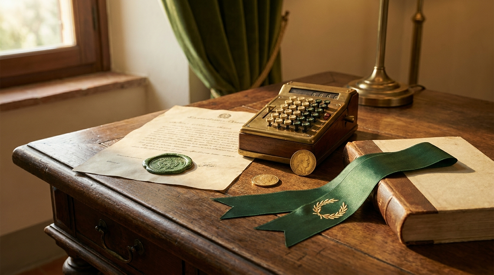

Esenzione fiscale sulle pensioni delle vittime del dovere: lo stato dell'arte
Si discute di un possibile ampliamento dei benefici fiscali sulle pensioni delle vittime del dovere, ricondotto a nuove istruzioni operative INPS. Al momento manca un riferimento documentale identificabile: la notizia va trattata con cautela. Ricostruiamo invece la cornice normativa consolidata, i presupposti del beneficio e le verifiche utili a chi rientra nella categoria.

Premessa: una notizia in attesa di conferma
Circola la notizia di un ampliamento dell'esenzione fiscale sulle pensioni delle vittime del dovere, che decorrerebbe dal 1° gennaio 2026 in forza di nuove istruzioni operative INPS.
È doveroso un avvertimento metodologico: allo stato non risulta individuabile un riferimento documentale univoco (numero e data di circolare o messaggio INPS). Finché il provvedimento non sarà reperibile e citabile, le affermazioni su un superamento di precedenti orientamenti restrittivi vanno considerate non confermate. Trattiamo quindi il dato consolidato e segnaliamo come fatto interpretativo, al condizionale, l'eventuale novità.
Inquadramento normativo
La figura della "vittima del dovere" trova il suo nucleo nella Legge 13 agosto 1980, n. 466, che disciplina le speciali elargizioni in favore di categorie di dipendenti pubblici e cittadini colpiti nell'esercizio o a causa di funzioni di servizio (artt. 3 e 4, sui presupposti soggettivi e sull'evento lesivo).
L'estensione dei benefici già previsti per le vittime del terrorismo alle vittime del dovere è stata operata dalla Legge 23 dicembre 2005, n. 266 (legge finanziaria 2006), art. 1, commi 563 ss., che ne definisce l'ambito soggettivo e rinvia, per l'attuazione, a fonte regolamentare (poi DPR 7 luglio 2006, n. 243).
Quanto al profilo fiscale, l'esenzione IRPEF sui trattamenti riconosciuti a queste categorie va ricondotta alle disposizioni speciali in materia di benefici per le vittime del terrorismo e del dovere e alla relativa prassi applicativa. Va precisato che l'attribuzione dell'esenzione a uno specifico articolo della Legge 23 dicembre 1998, n. 407 — talvolta richiamato — non è confermabile in questa sede: la L. 407/1998 incide su benefici per le vittime del terrorismo e della criminalità organizzata, ma il fondamento puntuale dell'esenzione fiscale richiede verifica caso per caso sulla base del trattamento concretamente percepito.
In sintesi: lo *status* di vittima del dovere e la sua estensione normativa sono dato consolidato; la portata esatta dell'esenzione fiscale dipende dalla natura della prestazione e va riscontrata sul singolo provvedimento di riconoscimento.
Implicazioni pratiche
Per il pensionato che rientra nella categoria, è essenziale distinguere due piani che spesso vengono confusi.
Il primo è il riconoscimento formale dello status di vittima del dovere, che presuppone un provvedimento amministrativo dell'amministrazione competente. È questo atto a costituire il titolo per i benefici, fiscali e non.
Il secondo è la decorrenza del trattamento e dell'eventuale beneficio fiscale. La data di efficacia di un'esenzione non coincide necessariamente con quella del riconoscimento: può operare per il futuro, oppure dare diritto a conguagli per le annualità pregresse non prescritte. Un'eventuale novità con decorrenza 2026, se confermata, inciderebbe sul piano fiscale ma non modificherebbe i presupposti dello status.
La conseguenza operativa è che l'effettivo beneficio non si presume: va verificato sul provvedimento individuale e sul trattamento concretamente erogato.
Cosa fare in concreto
- Recuperate il provvedimento di riconoscimento dello status di vittima del dovere e conservatene copia completa: è il documento da cui dipende ogni beneficio.
- Verificate la natura della prestazione percepita (pensione, assegno, elargizione): da essa dipende l'applicabilità e la misura dell'esenzione.
- Controllate i CU e i cedolini degli ultimi anni per accertare se l'IRPEF sia stata trattenuta su somme potenzialmente esenti.
- Attendete il riferimento ufficiale dell'eventuale provvedimento INPS prima di presentare istanze fondate solo sulla notizia di stampa: chiedete il numero e la data del messaggio o della circolare.
- Valutate l'istanza di rimborso o rettifica per le annualità non prescritte, con l'assistenza di un professionista, qualora emergano trattenute non dovute.
Avvertenza
Resta fermo che l'effettivo beneficio dipende dalla situazione individuale e dal riconoscimento formale dello status. Le considerazioni sull'eventuale ampliamento del 2026 sono espresse al condizionale in mancanza di un riferimento documentale identificabile.
---
Contributo informativo a cura di Tamburro & Partners - Avv. Giuseppe Tamburro. Non costituisce parere legale.
Ogni storia di lavoro ha i suoi tempi.
Se gestisci HR e vuoi un confronto su contenzioso, ispezioni o licenziamenti, scrivi allo studio. Ti rispondiamo entro un giorno lavorativo.